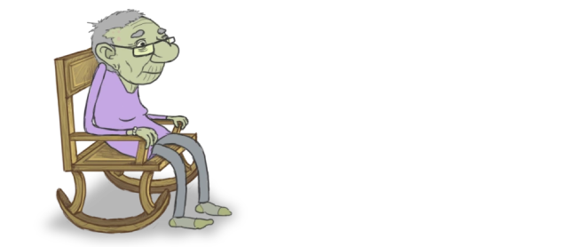
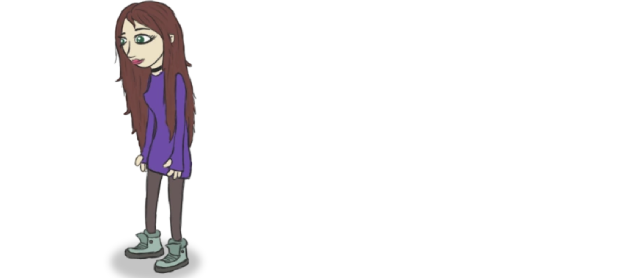
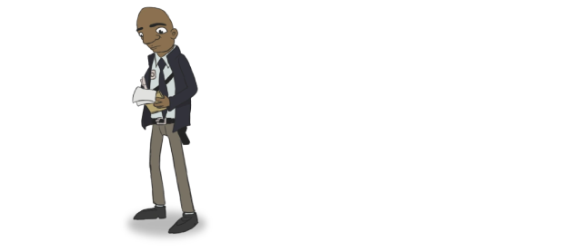
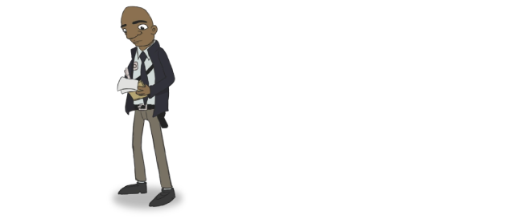
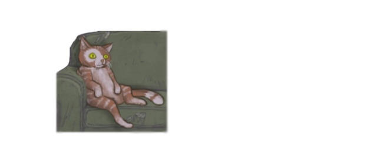
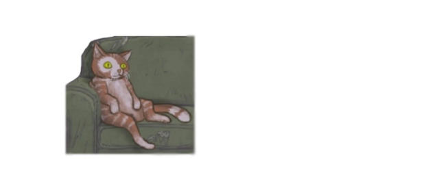
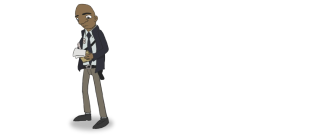
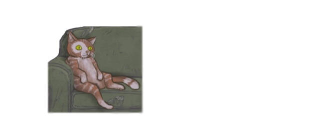

 

 

 



A história acompanha a vida de Sally Face, um garoto que precisa utilizar uma máscara prostética para esconder seu rosto, pois foi vítima de um misterioso acidente que o deixou desfigurado e causou a morte de sua mãe. No primeiro capítulo, vemos Sally e seu pai se mudando para um novo apartamento no Condomínio Addison, onde se passará a maior parte do jogo.
Logo você pode explorar seus corredores, conhecer os vizinhos, cada um com uma personalidade e um passado segredo a desvendar. Larry, outro jovem morador do prédio, se torna melhor amigo de Sally, e juntos irão atrás da causa dos estranhos acontecimentos que ocorrem no prédio, incluindo um recente assassinato, e quais mistérios ele esconde.
Porém, logo nos é revelado que isso são apenas lembranças de Sally, enquanto ele narra sua história de dentro da prisão, vários anos depois. Ele aguarda julgamento por um crime terrível, e essa história é uma tentativa de trazer a verdade que ele descobriu à tona, e tentar avisar o mundo do perigo que eles correm, antes que seja tarde demais.
A história de Sally Face tem altos e baixos. O que começa como uma simples história de fantasma, logo se desenrola para envolver conspirações do governo, um culto satanista secreto, outros tipos de atividade paranormal, dimensões paralelas e Deuses Anciões ao estilo Lovecraft.
Essa grande variação de temáticas faz a história do jogo ser bastante dinâmica, onde um assunto leva a outro, mas às vezes essas ligações são bem obscuras, e parecem estar lá não por fazer sentido para a história, mas porque o desenvolvedor achou que seria legal ter esse elemento. No final, acaba virando uma salada de ideias, em que algumas são abandonadas e outras ganham mais proeminência, com ideias que não se encaixam completamente.
Outra característica que parece boa no papel, mas que na prática é problemática, é o de esconder informações cruciais para o entendimento da história atrás de puzzles obtusos e segredos, que podem ser perdidos se você avançar com a missão principal. A ideia era de recompensar com mais detalhes deste mundo, os jogadores mais atentos e engajados, porém, o que me aconteceu, foi que a história ficou com ar de incompleta e mal contada.
Os personagens principais pelo menos têm personalidades distintas. Sally Face começa mais reservado e com medo de interagir com as pessoas, por causa de sua máscara, mas logo se torna mais confiante com a ajuda de seus amigos. Larry, melhor amigo de Sally, é mais descolado e o ajuda a se abrir, até ensinando Sally a gostar de rock. Ashley e Todd completam a turma.


Sally Face é um jogo independente criado pelo desenvolvedor Steve Gabry e foi responsável pela programação, criação de arte e composição musical. Foi distribuído pela Portable Moose e lançado no ano de 2016. Disponível nas plataformas Windows, Linux e Mac.
Sally Face é um jogo 2D, com visuais feitos a mão e animações simples, mas o enredo combinado com uma boa dose de criatividade é o que faz a magia acontecer. Seu enredo é simples e assustador, no qual o terror é construído na antecipação e no suspense.
Sally Face é um jogo de aventura indie criado por Steve Gabry a.k.a. Portable Moose. O jogo segue o personagem principal Sal Fisher (também conhecido como Sally Face), um menino com um rosto protético, que investiga assassinatos locais com seus amigos. O jogo consiste em 5 episódios que foram lançados entre 2016-2019. Sally Face também foi lançado no Nintendo Switch em 2021 e posteriormente no Playstation 4 e 5 em 2022. Sally Face é um jogo online que inclui personagens como Sal Fisher, Larry Johnson, Todd Morrison, Ashley Campbell, Travis Phelps e muito mais.
Obtenha o jogo via Steam:
https://store.steampowered.com/app/541570/Sally_Face__Episode_One/